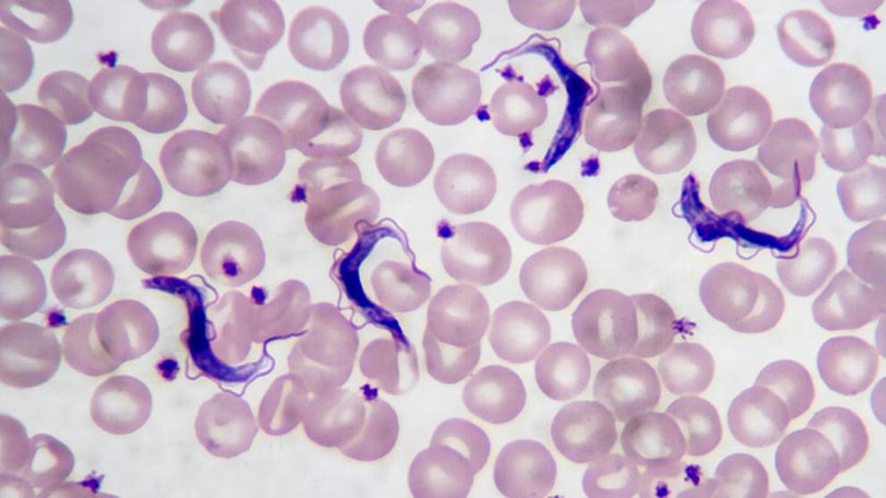

VMAS 2020
Los premios MTV Video Music Awards 2020 fueron entregados el 30 de agosto de 2020 por el canal de televisión estadounidense MTV en reconocimiento a los mejores artistas y videos musicales del último año. La ceremonia de entrega fue transmitida en directo desde Nueva York y fue el primer evento que se llevó a cabo en dicha ciudad desde el comienzo de la pandemia de enfermedad por coronavirus. La presentadora fue la actriz y cantante Keke Palmer. La ceremonia iba a realizarse en el Barclays Center de Brooklyn con público limitado o ausente, por órdenes del gobernador de Nueva York, Andrew Cuomo, con respecto a los controles pandémicos, pero la producción de MTV y el Barclays Center decidieron mutuamente el 7 de agosto de 2020 cancelar su plan inicial de hacer el evento al interior del recinto por medidas de seguridad. Para garantizar un ambiente seguro para los involucrados, MTV optó por transmitir presentaciones musicales al aire libre desde los cinco distritos de Nueva York: Manhattan, Brooklyn, Queens, el Bronx y Staten Island.5 El objetivo de esta ceremonia fue ayudar a revitalizar la ciudad tras el impacto de la pandemia y sus medidas de cuarentena y distanciamiento físico. En este contexto, los VMAs 2020 tuvieron tres categorías especiales: Mejor video musical desde casa, Mejor actuación de cuarentena y Héroes cotidianos: trabajadores médicos de primera línea.

Confirmado: "Campazzo va a jugar la próxima temporada en la NBA"
Las horas de Facundo Campazzo en el Real Madrid están contadas. Aunque todavía no hay nada oficial, el base argentino apura sus últimos partidos con la camiseta blanca. Y aunque algunos compañeros no quieran dar pistas sobre su futuro, lo cierto es que el porvenir del base cordobés tiene claro color NBA. Y así lo ha confirmado el representante del jugador en dos entrevistas radiofónicas concedidas en su país. Claudio Villanueva confirmó en Radio La Red lo que viene siendo un secreto a voces desde el pasado verano: "Facundo Campazzo va a jugar la próxima temporada en la NBA". Unas palabras que ponen fin a la etapa del argentino en el Real Madrid, que podría terminar de forma oficial el próximo 20 de noviembre ante el Fenerbahce, horas antes de que se abra el mercado de agentes libres en la NBA. Ahora sólo queda por despejar la incógnita del equipo en el que el todavía base del Real Madrid jugará la temporada que viene: "Tiene más chances de ir a la Conferencia Oeste y no es de los humildes. Sería hipócrita de mi parte decir que no tuvimos conversaciones. No pienso decir el equipo que está muy interesado en él. Hemos mantenido con tranquilidad el tema".

¿Qué es la enfermedad del sueño africana?
La tripanosomiasis africana humana (también conocida como enfermedad del sueño africana) es una enfermedad parasitaria transmitida por las moscas tsetsé del género Glossina y causada por un grupo de parásitos conocidos como tripanosomas. Esta enfermedad se encuentra en África ecuatorial y sigue una distribución irregular, dependiendo de la presencia de vectores y rasgos topográficos característicos. Lo cierto es que esta patología ha influido negativamente en el progreso económico y cultural del África subsahariana. De hecho, aproximadamente 60 millones de personas en 36 países están en riesgo de infección y la incidencia ha aumentado constantemente desde mediados de la década de 1960 hasta finales del siglo XX. No obstante, el aumento de la concienciación y la vigilancia han provocado una disminución del número de casos en los últimos años.
